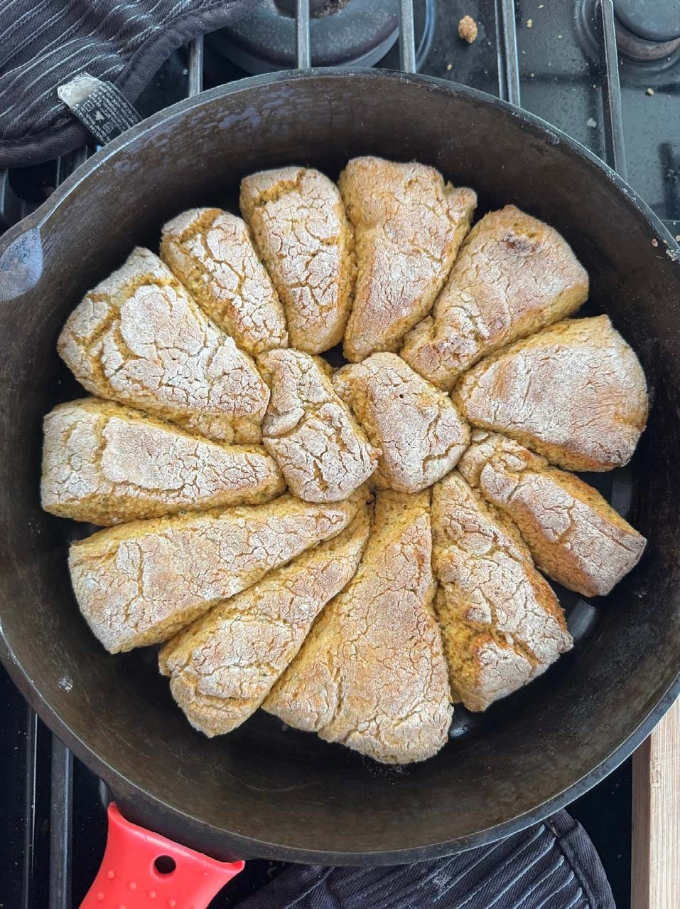

Cornmeal Scones

Ingredients
- 10 oz lactose-free milk or oat milk
- 1¼ tbsp lemon juice
- 1½ cups medium-grind cornmeal
- 1½ cups gluten-free flour
- ¾ tsp xanthan gum (if not in the flour)
- 1 tbsp baking powder
- 1 tsp baking soda
- 1 tsp salt
- 2 tbsp sugar
- 8 tbsp frozen garlic-infused olive oil
- 3 tbsp finely chopped fresh rosemary
Steps
- Preheat the oven to 450°F.
- Make buttermilk by mixing the lactose-free milk or oat milk with the lemon juice. Let it sit for 10 minutes.
- Measure the cornmeal into a bowl at least twice its volume.
- When the milk starts forming bubbles, add it to the cornmeal and stir. Let it sit for at least 10 minutes.
- Put the flour, xanthan gum, baking powder, baking soda, salt, and sugar into the Cuisinart and blend.
- Add the rosemary to the Cuisinart.
- Finely chop the frozen oil, then add it to the Cuisinart.
- “Cut in” the oil by lightly pulsing about a dozen times.
- Add the soaked cornmeal and buttermilk to the Cuisinart.
- Pulse 3 times, then lightly blend (about 5 seconds).
- Oil a 12-inch cast iron pan, including the sides.
- Cover a sheet of parchment paper with about 2 tbsp of flour.
- Remove the blade from the Cuisinart and scrape the dough onto the parchment paper.
- Mound the dough on the parchment paper, touching it as little as you can.
- Lightly tap the dough into a 9-inch round.
- Slice the round into wedges and place them in the pan.
- Bake for 15 minutes, then check. The tops will be golden brown.